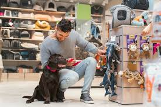

¡Somos tus aliado en el cuidado de tus peludos amigos!
Únete a nuestra comunidad que se preocupa por los miembros más leales y divertidos de la familia
Nuestra Historia
Adriana siempre había tenido una conexión especial con los animales, pero su vida cambió por completo el día en que encontró a Tomasita, una pequeña perrita callejera con grandes ojos llenos de esperanza. Decidió adoptarla y, desde ese momento, Tomasita se convirtió en su fiel compañera y mejor amiga. Juntas compartieron innumerables aventuras, desde paseos por el parque hasta noches de películas acurrucadas en el sofá. Sin embargo, a medida que la manada crecía con la llegada de otros rescatados, Adriana se dio cuenta de que cada uno de sus peludos tenía necesidades únicas que no siempre se podían satisfacer con productos convencionales.
Fue entonces cuando Adriana decidió abrir una tienda de mascotas, no solo para compartir su amor por los animales, sino también para ofrecer productos de calidad que realmente atendieran las necesidades específicas de cada mascota. En su tienda, cada rincón está pensado con cariño, desde juguetes diseñados para masticadores empedernidos hasta comida adaptada para cada tipo de dieta. Adriana quiere que cada dueño de mascota encuentre lo que necesita y que cada animalito se sienta especial, porque sabe que, al final del día, cada uno es único y merece lo mejor.
Nuestros Más Vendidos de la Semana
¡Conoce a los Nuevos Mejores Amigos de tu Peludo!
Martha
Consultora en Felicidad Canina
Ximena
Experta en Bienestar Animal
Felipe
Nutricionista Animal
Olivia
Especialista en Peluqueria y Estética

Enrique
Adiestrador Profesional
Jaime
Diseñador de Productos
Síguenos en nuestras Redes
¡Síguenos en redes sociales y mantente al día con nuestros nuevos productos, campañas de bienestar para tus mascotas y muchas sorpresas, incluyendo descuentos exclusivos! ¡No te lo pierdas